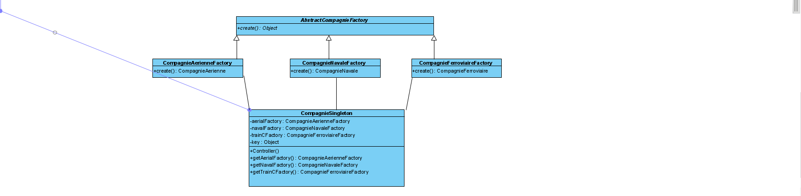
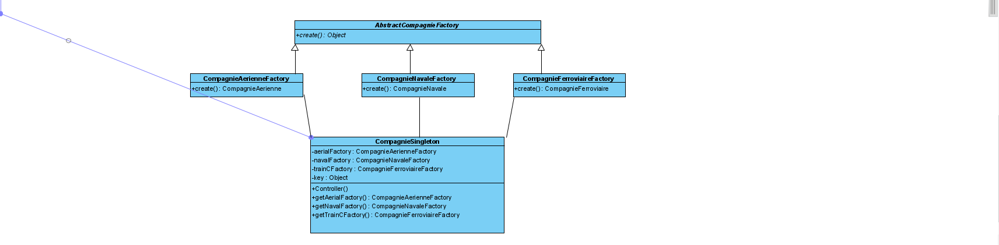

Nom: Siddharth Baichoo
Matricule: 20130259
Courriel: siddharth.baichoo@umontreal.ca
temps mis: 35 heures
Nom: Hamza Bellakhdim
Matricule: 20004834
Courriel: hamza.bellakhdim@umontreal.ca
temps mis: 30 heures
Nom: William Bach
Matricule: 20127144
Courriel: william.bach@umontreal.ca
temps mis: 35 heures
Soumetteur: William Bach
| Tâche | Siddharth | Hamza | William |
|---|---|---|---|
| Patrons dans le diagramme de classe | 0% | 10% | 90% |
| Diagrammes de séquence | 100% | 0% | 0% |
| Implémentation | 50% | 0% | 50% |
| Révision diagrammes de séquence | 100% | 0% | 0% |
| Contraintes OCL | 50% | 0% | 50% |
| Discussions et justifications | 60% | 10% | 30% |
| Rapport | 0% | 0% | 100% |
Voici notre solution pour l'ajout des patrons de conception au diagramme de classe.


 
